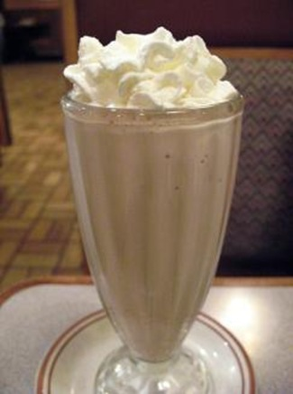

Chikoo Milk shake(by chef Zakir):Recipe

Ingredients
- 250 grams chikoo
- 3 cups milk
- 6 tbsp sugar
- 4 tbsp beaten cream
- 1/4 cup crushed ice
Method
- Blend chicos,milk,sugar and 2 tbsp cream in a blender.
- When all things mixed well then add ice and blend again.
- Pour it in a glass and put whipped cream on top.